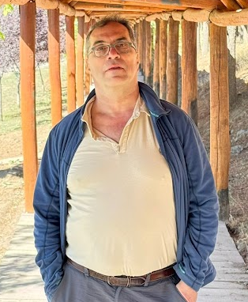
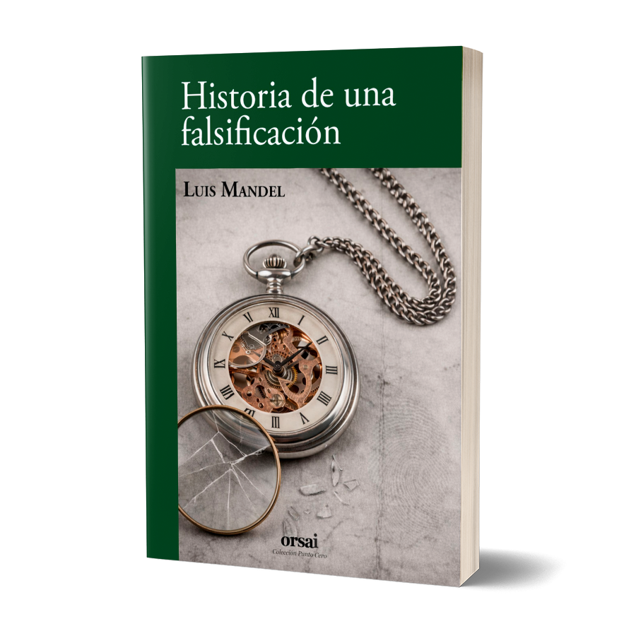
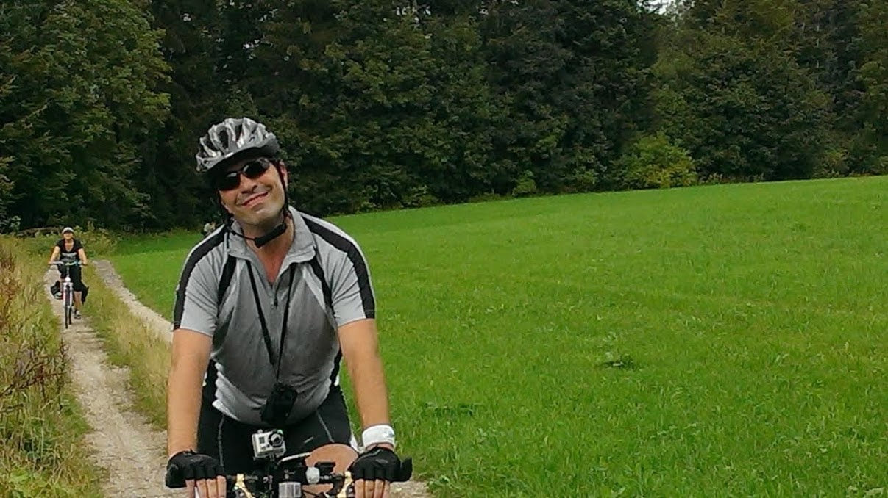

Ámbito de trabajo
Participación en entornos académicos internacionales donde combinó docencia, desarrollo de software e investigación en informática.

Informática, escritura e investigación
Luis Mandel
Doctor en Informática y escritor argentino. Su trayectoria reúne desarrollo de software, investigación interdisciplinaria y una práctica sostenida de la escritura centrada en la experiencia, la memoria y el paso del tiempo.

Primer libro
Una selección de cuentos escritos a lo largo de más de veinticinco años, publicada por Editorial Orsai.
Ver libroProyectos
Su vida profesional se desarrolló en universidades de Europa, Australia y Brasil, con una dedicación centrada en el desarrollo de software y la investigación interdisciplinaria entre la informática y la biología.
Participación en entornos académicos internacionales donde combinó docencia, desarrollo de software e investigación en informática.
Integración de herramientas computacionales, modelado y análisis interdisciplinario para abordar problemas en biología y ciencias de la vida.
Publicaciones
A lo largo de su trayectoria académica, participó en publicaciones sobre cálculo lambda, lenguajes de especificación, UML y diseño de aplicaciones web.
Extending UML to model navigation and presentation in web applications
56 citas
On the expressive power of pure OCL
61 citas
Using UML to design hypermedia applications
Amplia difusión académica
La investigación fue una forma de pensar problemas complejos sin perder la conexión con sus dimensiones concretas de diseño, modelado y experiencia.
Formación
Se formó en una escuela técnica, estudió Matemática y Computación y se doctoró en Informática en Alemania.
03/1983 - 11/1988
Dipl. in Computer Science.
07/1990 - 03/1995
Dr. rer. nat.
Trayectoria
Paralelamente a su trayectoria científica, fue construyendo una relación sostenida con la escritura. Realizó talleres literarios con distintos docentes, entre ellos Pablo Gaiano y Hernán Casciari, y encontró en el relato una forma de pensar la experiencia, la memoria y el paso del tiempo.
Los cuentos de Historia de una falsificación (y otros cuentos) se mueven entre lo íntimo y lo colectivo, entre la experiencia personal y la historia compartida. Lo auténtico no siempre coincide allí con lo original, y el pasado no aparece como nostalgia, sino como presencia.
Investigación
Además de su trayectoria en informática, participó en investigación en biología molecular y bioinformática, colaborando con equipos internacionales en temas vinculados a enfermedades infecciosas.
The Knock-Down of the Chloroquine Resistance Transporter PfCRT Is Linked to Oligopeptide Handling in Plasmodium falciparum
Publicado en Microbiology Spectrum.
El trabajo forma parte de una línea centrada en los mecanismos de resistencia a la malaria, integrando biología experimental y análisis computacional.
Viajes
Sus intereses incluyen la lectura, la escritura y los deportes de resistencia. Practica inline skating y buceo de profundidad. Además, realiza viajes de larga distancia en bicicleta y disfruta de paseos con su motocicleta por caminos de montaña.
Ha recorrido más de sesenta países. Esos desplazamientos se reflejan en una escritura atenta al movimiento y a las fronteras visibles e invisibles.

Vida
Vive en Europa desde los años noventa y es padre de un hijo. Historia de una falsificación (y otros cuentos) es su primer libro de relatos.